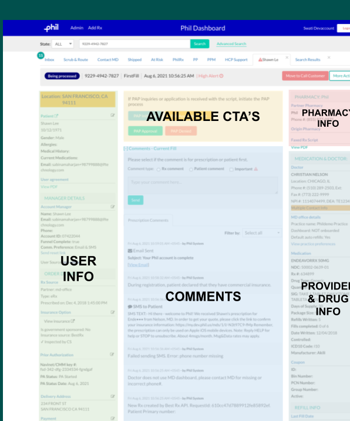
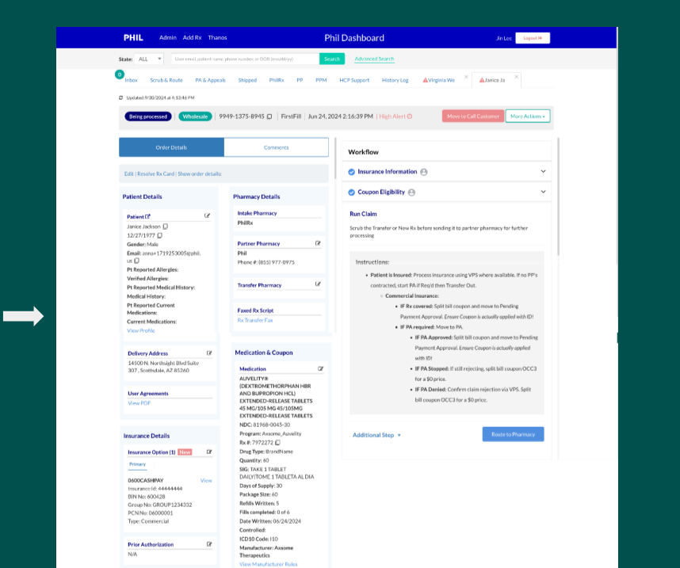
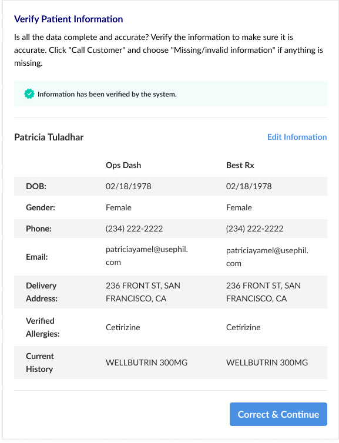
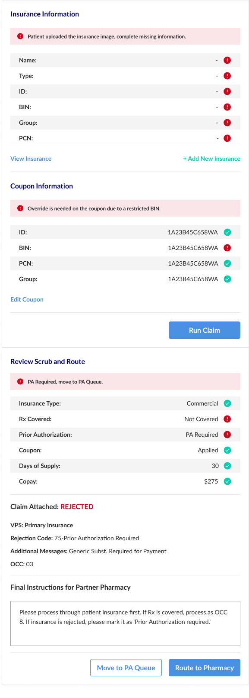
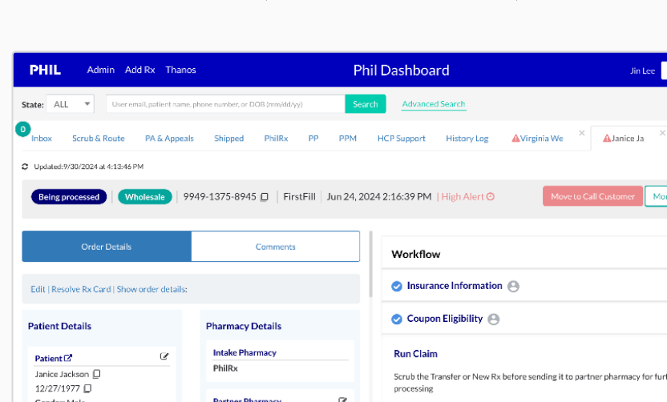

Ops dashboard redesign
From fragmented information to a guided, decision-first workflow
I redesigned Scrub and Route around the decisions technicians and pharmacists needed to make. Clear stages, contextual actions and standardized patient, drug and pharmacy information replaced a dense page that depended on recall.

A dense, unstructured interface forced users to rely on memory, manually search for information, and toggle between screens to complete each order.

A guided, component-driven workflow organizes information around the decisions users need to make, reducing cognitive load and speeding up processing.
The Scrub and Route within the Ops Dash is the critical first step for all technicians and pharmacists, requiring them to review patient data and transfer orders to partnered pharmacies. However, the legacy architecture was brittle and lacked a structured, guided experience. Pharmacists were forced to rely on manual memory and sift through unnecessary information to process each order. This systemic inefficiency created an operational bottleneck, pushing average processing times over five minutes and effectively capping our daily fulfillment volume.
Resolving this required more than a UI refresh because it demanded a complete architectural overhaul of the workflow. I directed the transition to a scalable, component-driven framework that provided clear, step-by-step instructions. By partnering closely with Product and Engineering leadership, I ensured our design strategy standardized data inputs and established a streamlined workflow. This approach eliminated the cognitive burden on the pharmacy team, fundamentally improving both processing speed and routing accuracy.
Instead of pursuing a time-consuming and expensive platform overhaul, I scoped a targeted design strategy focusing on the critical areas users needed most including guided experiences, standardized order information, and clear communication channels. While the pharmacy team was initially skeptical of the operational shift, the intuitive component-driven design drove rapid adoption. We achieved an immediate reduction in processing time from over five minutes to under a minute, while reducing platform training time for new hires as we scaled the staff 10x.
Within two quarters, surging prescription volumes made it clear that manual processing was no longer sustainable. Because I had established a strict, component-driven design architecture, Engineering had the structural foundation necessary to automate the workflow. This redesign seamlessly facilitated the implementation of a full automation process, ultimately driving 70% of all orders to be fully automated.
Showing what the system checked, and where judgment is needed
As automation took on more orders, technicians needed to trust it. Each step showed what the system had verified and flagged what it couldn't resolve. Over time, it learned from how admins resolved unusual orders, suggesting next steps for their review before automating them too.
Every field showed whether the system had verified it, so technicians focused only on what was flagged.
Ops Dash and pharmacy system values sat side by side, so a discrepancy was visible at a glance.
When a claim came back rejected, the system surfaced the reason and the technician chose the next step, routing to the pharmacy or moving the order to the prior authorization queue.



Standardized the order information and made next actions explicit, reducing reliance on memory.
Initially skeptical pharmacy staff adopted the guided steps. New hires could follow a consistent sequence instead of memorizing the process.
As volume rose, 70% of orders were automated where their requirements matched the processing rules.
Reduced average order processing time by 80%.
Orders processed automatically when requirements matched processing rules.
Scaled operations 12x without a proportional increase in headcount.
Standardized data inputs and guided decisions reduced routing errors and rework.